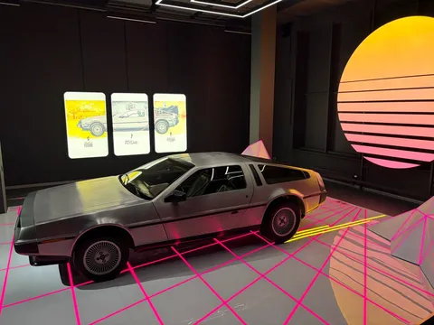
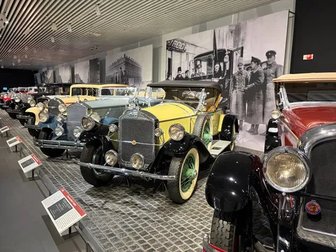
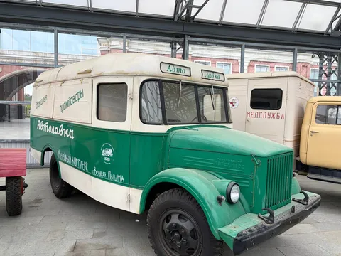
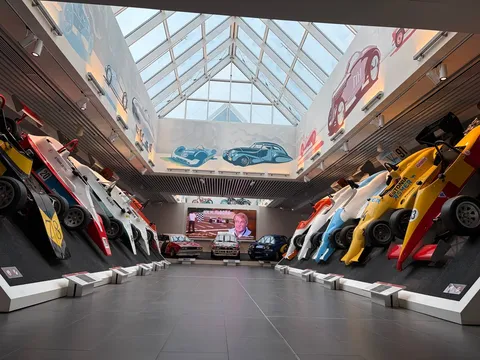

Это не только медная столица России (как гласит стелла при въезде), но и локация огромного музея техники. Туда бы на целый день приехать, но мы были стеснены во времени, поэтому авиацию, паровозы, военную технику и даже настоящий Буран оставили на следующий раз, довольствовавшись лишь музеем автомобилей.
Зато музей автомобилей сам по себе стоящий. Около 600 экспонатов из всех эпох. Иномарки XIX и первой половины XX века, почти весь советский автопром, вплоть до автоспорта. Много редких позиций, много удивительных механизмов, рай для петролхеда.
Хотя отсутствие некоторых лотов удивляет. 0 японских тачек, мало иномарок 60-х и новее, и (шок!) не представлена продукция Ульяновского завода. Но музей продолжает развиваться и пополнять коллекцию, так что, надеюсь, когда я там окажусь в следующий раз, там будет и буханка, и виллис, и хакоска.



